Kibana Guide: Upload a File and Create a Data View
|
This content was generated with the assistance of AI and should be verified against the official documentation before being relied on in production. |
Checked on 2026-11-11 against Kibana 9.5.x.
What you build
You do three things that every later guide relies on. You upload the small CSV file of the lab into a new index, to see what the file upload does and where it can trip you up.
You create the data view Bookshelf logs (guides) on the log data stream of the Bookshelf service, which the Discover, Lens and rule guides use.
And you add two things to that data view without changing a single stored document: a runtime field status_class that turns the HTTP status into 2xx, 4xx or 5xx, and a URL formatter for the field attributes.uri.
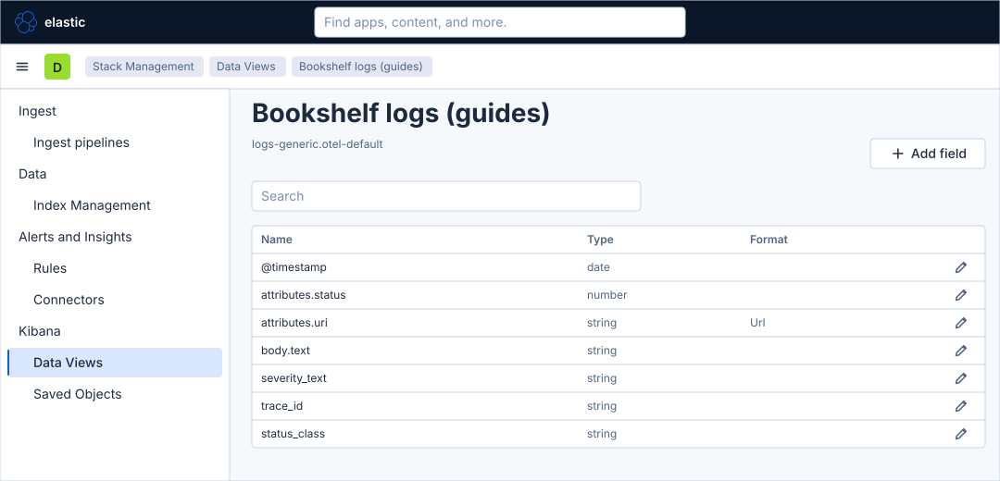
Before you start
-
Start the Kibana profile of the hands-on lab and wait about a minute:
cd lab docker compose --profile kibana up -d -
Open http://localhost:5601 and sign in as
elasticwith the passwordlab-elastic-password. When Kibana opens its full-screen welcome page, click Explore on my own. -
Do the previous guide, First steps in Kibana, to know the menu and the time picker. It also installs the sample data sets, but this guide does not need them.
-
The load generator must have been running for a minute or two, so that the data stream
logs-generic.otel-defaultexists. It does after the lab start in its default mode, andcurl localhost:8090/prints the mode. -
The file to upload is
kibana/bookshelf-books.csvof the lab folder: a header linetitle,author,genre,pages,published_yearand 30 books. Copy its path from your lab folder, you choose it in a file dialog. -
The lab runs with a trial licence, and this guide needs only the basic licence and the privileges of the
elasticuser. -
The figures are drawings of the Kibana 9.5 user interface, not screenshots, so small details can differ from your screen. A highlighted box with a number marks the control of the step with the same number. Where a screen is drawn without a label (the buttons that confirm the override and start the import), the text of the step names the button by its role.
Steps
Two screens are used. The first part works on the Add data page, which has a tab for files. The other parts work in Stack Management, in the Data Views section. There is no map to learn: the figures show each screen at the step that uses it.
Upload the books file
-
On Home, in the row Get started by adding integrations, click Upload a file. The page Add data opens on its tab Upload file.
-
Under Select index creation method, check that New index is selected. (Existing index adds the rows to an index that exists already.)
-
In Index name, type
guide-books. Kibana accepts lowercase names with hyphens and numbers. -
Click the drop zone Select or drag and drop files and choose
bookshelf-books.csvin the file dialog, or drag the file onto the zone. Kibana accepts PDF, TXT, CSV, log files and NDJSON.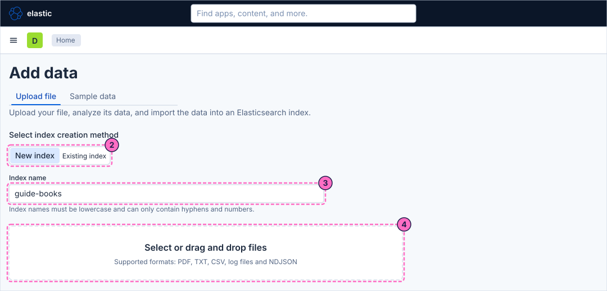
-
Kibana analyses the file and shows what it found: a delimited file with the delimiter comma and the quote character. For this file it does not recognise the header line, so it names the columns
column1tocolumn5and treats the linetitle,author,genre,pages,published_yearas the first book. Click Override settings.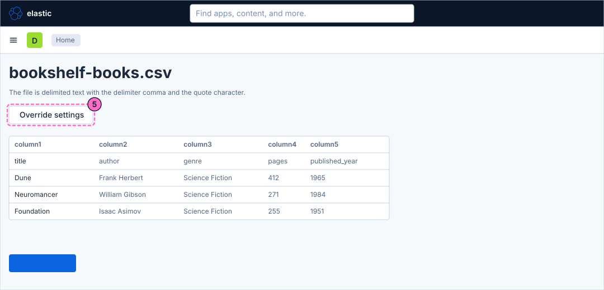
-
In the window of the override settings, tick Has header row.
-
Confirm the window with its primary button, the one that applies the settings.
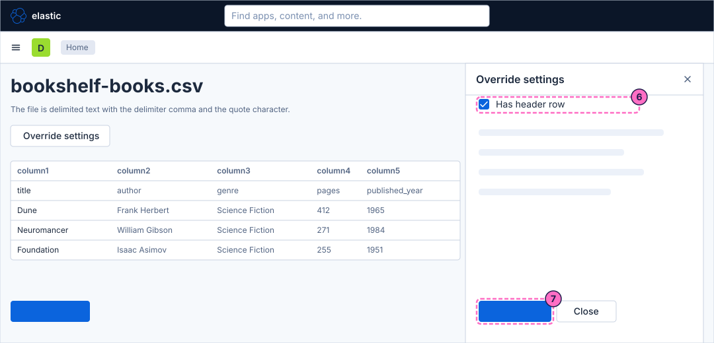
-
Check the preview. The columns are now named
title,author,genre,pagesandpublished_year, and the first row is Dune. Kibana typestitle,authorandgenreas keywords andpagesandpublished_yearas numbers. -
Click the primary button that starts the import.
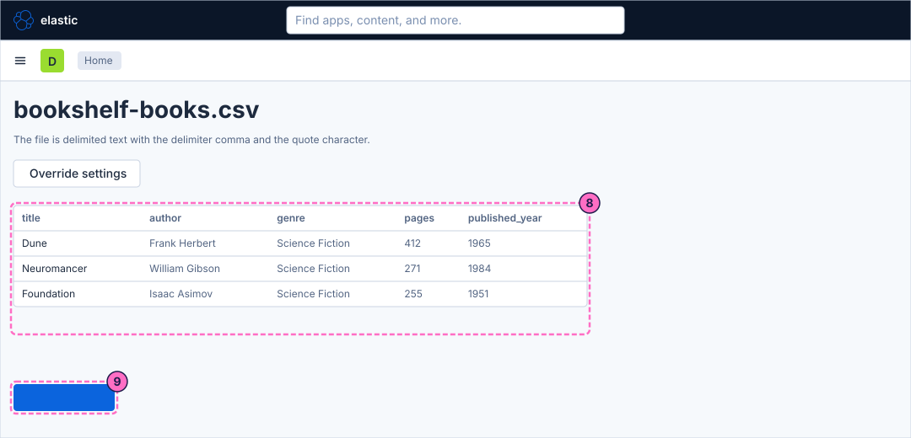
-
Wait until Kibana reports that the import is complete. The import may offer to create a data view for the new index; the guides of this series do not use one for
guide-books, so either choice is fine.
Create the data view for the Bookshelf logs
-
Click the menu button, Toggle primary navigation, at the left of the second bar.
-
Scroll the navigation to the section Management and click Stack Management.
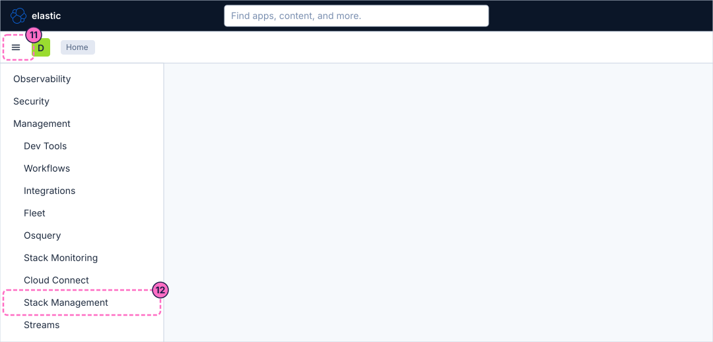
-
In the menu at the left, under Kibana, click Data Views.
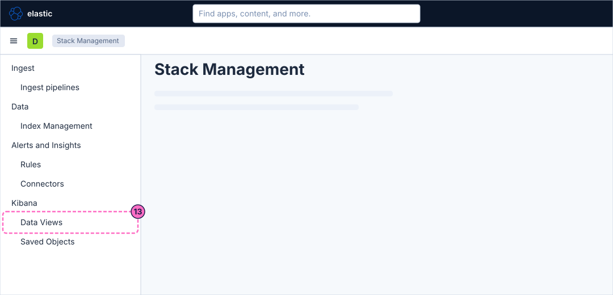
-
Click Create data view. The page lists the data views of Kibana: the managed ones (APM, Case Analytics) and, if you installed them in the previous guide, the sample ones. The first sample set you installed carries the badge Default.
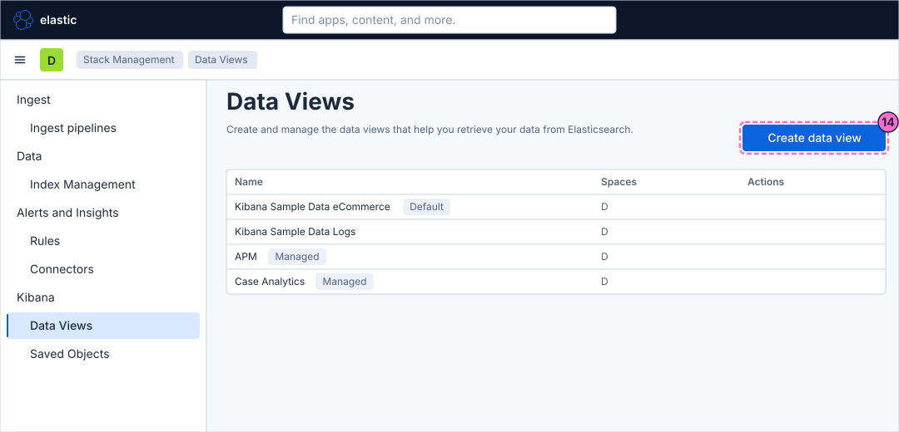
-
In the flyout, type
Bookshelf logs (guides)in Name. -
Type
logs-generic.otel-defaultin Index pattern. The right side of the flyout lists the data stream that matches. -
Leave Timestamp field on
@timestamp, or choose it if the list shows another field. -
Click Save data view to Kibana.
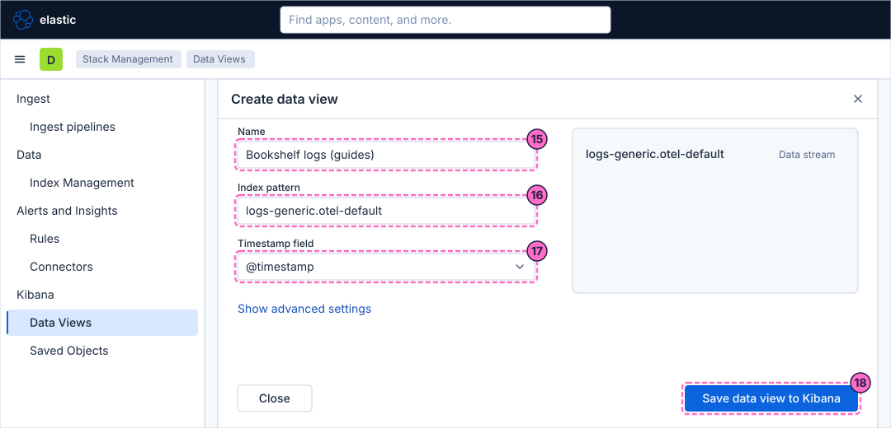
-
Kibana opens the page of the new data view with a table of its fields. The fields of the Bookshelf logs are
@timestamp,body.text,severity_text,attributes.uri,attributes.status(a number) andtrace_id, among about a hundred more that come from the OpenTelemetry mapping.
Add a runtime field
-
On the data view page, click Add field.
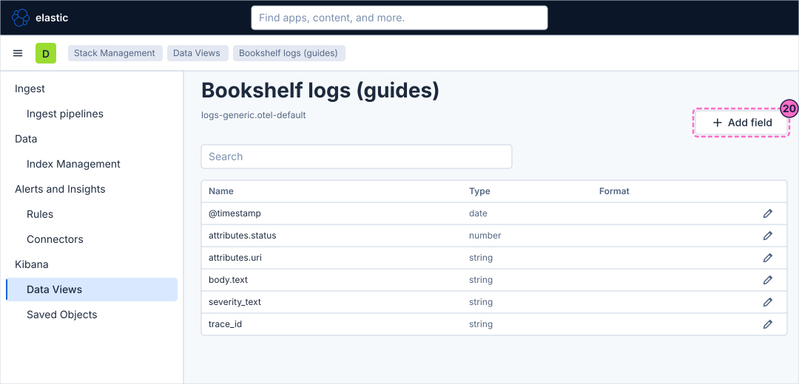
-
In the field editor that opens at the right, type
status_classin Name. -
Set the type to Keyword.
-
Type the script that sets the value of the field. It reads the number
attributes.statusand emits one of three texts. A document without a status emits nothing:if (doc['attributes.status'].size() == 0) { return; } long s = doc['attributes.status'].value; if (s >= 500) { emit("5xx"); } else if (s >= 400) { emit("4xx"); } else { emit("2xx"); }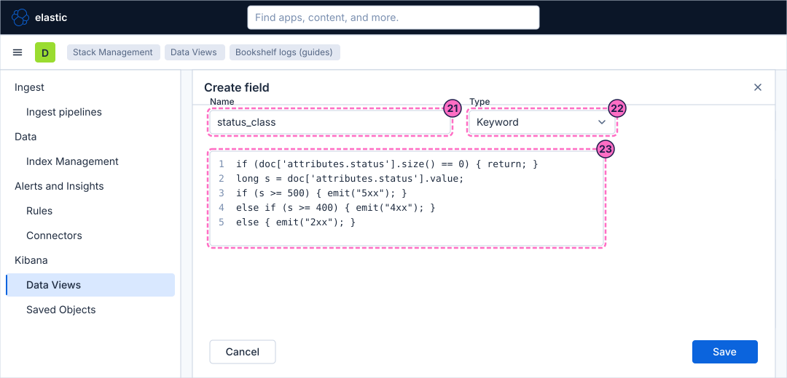
-
Look at the preview of the editor. It runs the script on sample documents of the index and shows the value of
status_classfor each, mostly2xxwhile the load generator runs in its default mode. An error in the script is shown there instead of values. -
Click Save.
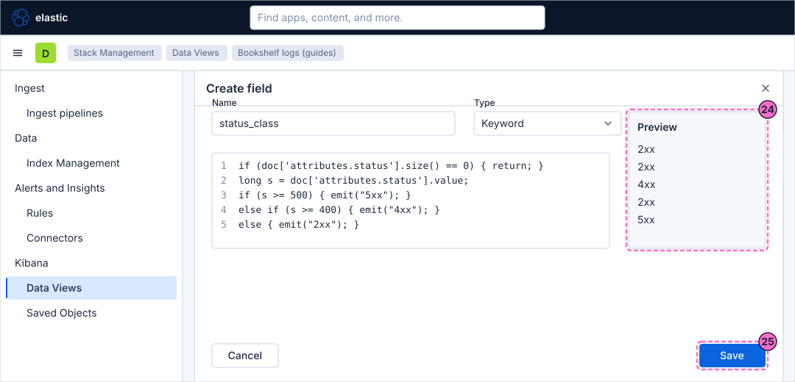
Format a field
-
Back on the fields table, type
attributes.uriin the search box above the table. The table narrows to that field. -
Click the edit button at the right of the row
attributes.uri.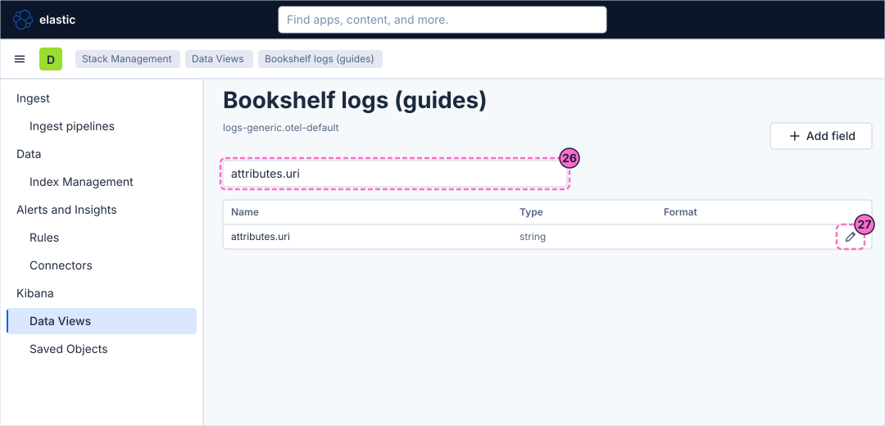
-
In the field editor, turn on Set format and choose the format Url.
-
Enter the template
http://localhost:8080{{rawValue}}in Url template. The text{{rawValue}}is replaced by the stored value, so/api/searchbecomes a link tohttp://localhost:8080/api/searchon the Bookshelf service. -
Click Save.
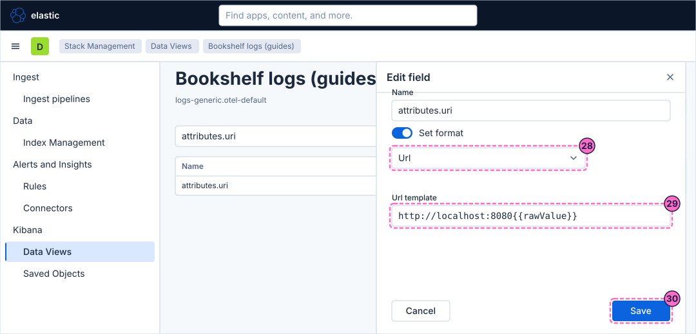
-
The fields table now shows Url in the format column of
attributes.uriand listsstatus_classwith the type string. The editor of a field has a preview of its own, which shows a sample value as it will look.
Check the result
Check the three things in turn.
-
The upload: the index
guide-booksholds the 30 books.curl -s -u elastic:lab-elastic-password "localhost:9200/guide-books/_count"The answer contains
"count":30. -
The data view: open Stack Management → Data Views. The list holds Bookshelf logs (guides), and its page lists
status_classand the format ofattributes.uri. -
The runtime field: it is computed when a query reads it, so nothing is reindexed. To see it with values, open Discover from the menu, choose the data view Bookshelf logs (guides) in the data view picker and find
status_classin the field list. The next guide does this in full.
To see the value 5xx appear, force errors for a minute and then restore normal traffic:
curl -X POST localhost:8090/mode/failing
curl -X POST localhost:8090/mode/normalVariations
-
To format a number of bytes, edit a numeric field of a data view that has one, for example
bytesof Kibana Sample Data Logs, and choose the format Bytes; its numbers are then shown with a unit such as KB or MB. The Bookshelf logs have no such field. -
To format a duration, edit a numeric field that holds a time, such as
attributes.transaction.duration.usof the trace data, choose the format Duration and set the input unit of the field (microseconds there). The Bookshelf logs carry no duration either, and the lab was not used to exercise this format. -
Use Existing index in the upload to add the rows of another file to
guide-books, for example after you fix a file.
What can go wrong
| Symptom | Cause | Fix |
|---|---|---|
The columns are named |
The header line was not detected. |
Click Override settings and tick Has header row, as in the steps. |
The upload is refused for a file name or a size |
The file is not one of the accepted formats, or it is larger than the upload limit of the file importer. |
Use a CSV, TXT, log or NDJSON file. The lab file has 31 lines and is far below the limit. |
Index name is rejected |
Index names must be lowercase and contain only hyphens and numbers besides the letters. |
Use |
The index pattern says that it matches no sources |
The data stream does not exist yet, because the load generator was just started, or the pattern has a typo. |
Check the mode with |
The preview of the runtime field shows no values or an error |
The script has a typo, or the type is not Keyword while the script emits text. |
Retype the script exactly as shown and set the type to Keyword. |
Url template is not shown |
The format is not Url. |
Choose Url in the format list. |
Clean up
Keep the data view Bookshelf logs (guides), its runtime field and its format: the following guides use them. The upload is only an exercise, so you can delete its index:
curl -s -u elastic:lab-elastic-password -X DELETE "localhost:9200/guide-books"If the import created a data view for it, delete that one under Stack Management → Data Views. To remove everything the lab stores, stop the profile with docker compose --profile kibana down -v.
Where to go next
-
Previous guide: First steps in Kibana.
-
Next guide: Explore logs in Discover, which searches and filters the Bookshelf logs through the data view you created.
-
Reference: Data views and Discover covers data views, runtime and scripted fields and formats in full, and Ingesting monitoring data explains how data reaches Elasticsearch in the first place.